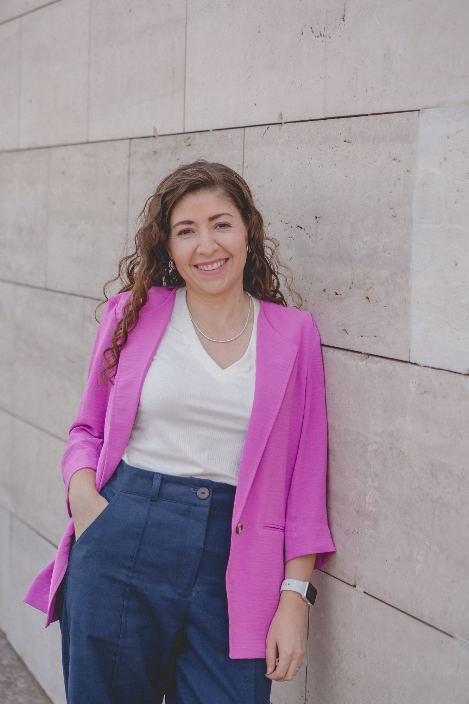
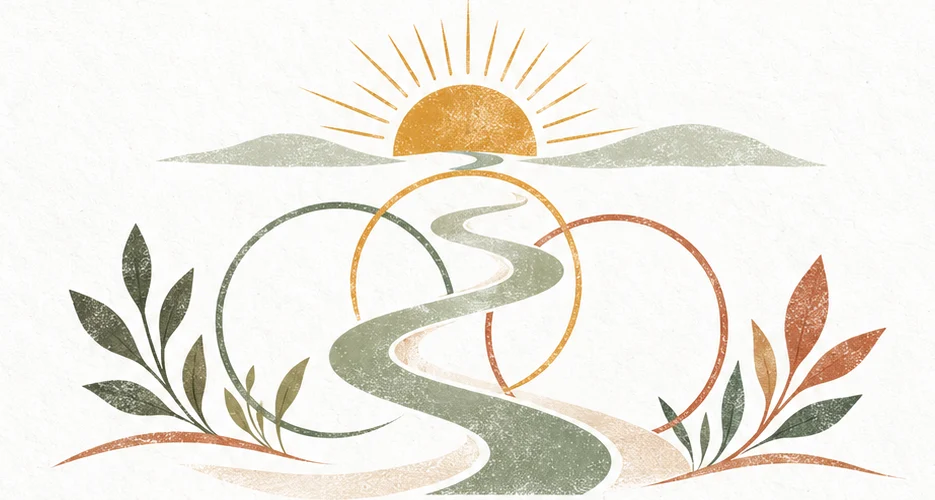
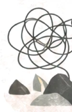
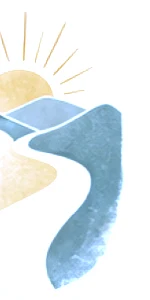
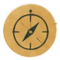
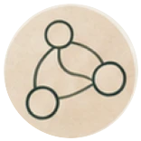
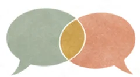

Terapia de pareja para familias ensambladas
Más claridad para construir su propia forma de ser familia.
Acompaño a parejas que están formando o ya forman una familia ensamblada a comprender sus conflictos, regular sus emociones y construir acuerdos propios. Sin recetas mágicas y sin buscar un único culpable.

Nelly Huerta, psicóloga clínica y parte de una familia ensamblada desde hace más de doce años.
Es sábado por la mañana.
Ustedes habían organizado el fin de semana, pero un mensaje cambia los planes. Hay que modificar un horario, resolver quién busca a los niños o aceptar una decisión tomada en el otro hogar.
Lo que comenzó como un cambio cotidiano termina abriendo una conversación mucho más grande.
“Parece que lo que dice tu ex importa más que lo que digo yo.”
Una persona intenta explicar. La otra se defiende. Aparecen asuntos antiguos, promesas que no se cumplieron y la sensación de que, por más que lo intenten, siempre terminan en el mismo lugar.
La conversación se enfría.
No es la primera vez.
Y tampoco se trata solamente de ese mensaje. Detrás de la discusión hay una pregunta más profunda:
¿Qué lugar ocupa cada persona dentro de esta familia?
Dos lugares distintos dentro de la misma pareja
Quien llegó a una relación en la que ya había hijos puede sentir que nunca es una verdadera prioridad.
Quien tiene hijos de una relación anterior puede sentir que debe elegir constantemente entre su pareja y su rol de padre o madre.
Ambos terminan agotados. Uno siente que no es visto; el otro, que nada de lo que haga será suficiente. Y empiezan a funcionar como adversarios, aunque los dos desean lo mismo.
Quizás alguna de estas frases se dice en su casa
- “No logramos conversar sin terminar peleando.”
- “Acordamos algo y después no se cumple.”
- “Siento que no me entiende ni me ve.”
- “Estoy cansada de intentar arreglarlo y volver siempre al mismo lugar.”
- “No sabemos qué lugar tiene cada uno.”
El amor, por sí solo, no siempre alcanza para ordenar una familia ensamblada.
No porque su relación esté condenada, sino porque están construyendo una realidad compleja para la que pocas personas recibieron un mapa: hijos con necesidades propias, historias anteriores, otros hogares, criterios de crianza distintos y decisiones que no siempre dependen de ustedes.
Por eso los conflictos rara vez tienen una única causa o un único culpable. El cambio comienza cuando cambia la pregunta.
¿Quién tiene la razón?
¿Qué está pasando entre nosotros y qué podemos hacer diferente?
Del mismo lugar de siempre a un camino propio
-

Antes
Discusiones repetidas, roles confusos, culpa, soledad y reactividad.
-
El proceso
Un acompañamiento cercano y neutral para ampliar la mirada, comprender la dinámica y convertir emociones en conversaciones, y conversaciones en acuerdos.
-

Después
Más regulación, lugares claros, límites sanos, decisiones conscientes y capacidad de hacer equipo.
La meta no es una familia perfecta. Es una pareja con más recursos para sostener su elección, reparar cuando se equivoca y liderar la vida que quiere construir.
No existe una única receta
“Quizás la pregunta no es cuál es la mejor forma de construir familia, sino qué tipo de familia queremos construir nosotros.”
Hay familias ensambladas donde todos conviven juntos y otras donde mantener cierta distancia es lo que mejor funciona. Ninguna es más válida que otra.
Leer la transcripción
“No podría estar con alguien que tenga hijos.” El último tiempo escuchaba mucho esta frase, pero también he escuchado “no podría estar con alguien que no los tenga, porque no entendería mi situación”. Y entiendo ambos temores, porque cuando enfrentamos algo nuevo tendemos a llenar eso desconocido con experiencias de amigos, lo que vivimos en nuestra propia familia, o incluso estereotipos aprendidos de películas y series.
Inconscientemente, asumimos que solo existe una sola forma de hacer pareja o familia. Y olvidamos que nosotros somos los protagonistas de las relaciones que vamos construyendo.
No existe una única receta. Hay familias ensambladas donde todos conviven juntos y otras donde mantener cierta distancia es lo que mejor funciona. Ninguna es más válida que otra, porque no siempre lo que le funcionó a una familia nos va a funcionar a nosotros. Entonces, quizás la pregunta no es cuál es la mejor forma de construir familia, sino qué tipo de familia queremos construir nosotros.
Un proceso para poner luz donde hoy no la hay
En terapia de pareja para familias ensambladas podrán:
- Comprender qué hay realmente detrás de sus discusiones, en lugar de quedarse atrapados en el último comentario, mensaje o cambio de planes.
- Pasar de “acordamos algo y después no se cumple” a acuerdos claros, realistas y sostenibles.
- Reconocer sus gatillantes y regular sus emociones, para que el enojo o el miedo no decidan por ustedes.
- Expresar lo que necesitan sin atacar ni ponerse a la defensiva.
- Definir el lugar de cada integrante, sin competir con los hijos ni intentar reemplazar a nadie.
- Establecer límites más saludables con las ex parejas y los otros hogares, diferenciando lo que depende de ustedes de lo que no.
- Comprender mejor las reacciones de los hijos, sin interpretar cada conducta como un rechazo personal.
- Construir una forma propia de ser familia, en lugar de intentar encajar en un modelo que no contempla su historia.
Cómo trabajamos
No recibirán una fórmula rígida, sino un proceso personalizado para comprender su historia y construir respuestas que tengan sentido para ustedes.
-
Una primera conversación
Me cuentan qué están viviendo, les explico cómo trabajo y vemos juntos si este espacio tiene sentido para ustedes.
-
Mirar el territorio
Una evaluación inicial de la relación y del sistema familiar: la historia de cada uno, los hijos, las ex parejas y los otros hogares.
-

Sesiones de pareja
Un espacio neutral donde ambos se sienten escuchados. Herramientas para regular emociones, conversar de otra manera y, cuando sirve, preguntas para trabajar entre sesiones.
-
Acuerdos y revisión
Acuerdos concretos sobre convivencia, crianza, límites, roles y tiempo de pareja, y revisiones periódicas para ajustar la ruta.
Lo que el proceso necesita de ustedes
La participación de ambos, práctica entre sesiones y disposición a revisar los propios patrones. No hace falta llegar con el mismo nivel de entusiasmo; sí que ninguno venga obligado. Cuando es clínicamente pertinente, puede haber sesiones individuales complementarias.
No soy árbitro. Camino cerca.
Ustedes conocen su historia mejor que nadie. Yo aporto preguntas, herramientas, experiencia e hipótesis para ayudarlos a ampliar la mirada.
-
Pongo luz
Hago visible lo que opera detrás del conflicto.
-
Acompaño
Camino cerca sin decidir por ustedes.
-

Conecto
Uno historias, vínculos y contexto para abrir nuevas respuestas.
Lo que guía mi trabajo
-
No hay un único molde
Cada familia puede encontrar una ruta válida, consciente y propia.
-

Conversar transforma
La curiosidad y la escucha abren posibilidades que el juicio mantiene cerradas.
-
Hacer equipo
El cambio nace del compromiso, la colaboración y la responsabilidad compartida.
- Creo que una vida no tradicional también puede ser una vida plena.
- Creo que cada integrante merece voz, validación y un lugar claro dentro del sistema familiar.
- Creo que la compasión no elimina la responsabilidad: la hace posible.
- Creo que pedir ayuda es una forma de liderazgo.
- Creo que no podemos controlar todo, pero sí elegir cómo participar en nuestra historia.
¿Es este el espacio para ustedes?
Probablemente sí, si…
- Están formando o ya forman una familia ensamblada, estén casados o no.
- Sienten que vuelven siempre a la misma discusión.
- Aun cansados, conservan energía para hacerse preguntas y participar del cambio.
- Ambos están dispuestos a mirar su parte, no solo la del otro.
- Quieren trabajar de manera preventiva, antes de que todo estalle.
Probablemente no, si…
- Buscan una receta mágica o alguien que convenza a la pareja de cambiar.
- Uno de los dos viene obligado.
- Ya tomaron la decisión de terminar.
- Necesitan un árbitro que diga quién tiene la razón.
Esta claridad no es rechazo. Es cuidado: protege a la pareja y la calidad del proceso.

Soy Nelly Huerta
Soy psicóloga y terapeuta de parejas especializada en familias ensambladas. También soy parte de una desde hace más de doce años.
Cuando comencé mi relación tenía 28 años y una visión bastante tradicional de cómo debía verse una vida feliz. Me enamoré de un hombre separado y padre de tres hijos, y de pronto me encontré un domingo en el parque, habitando una realidad que no había formado parte de mi plan.
Había amor, pero también dudas, tiempos compartidos y decisiones tomadas en otros hogares. Vivimos esos primeros años con muy poca información y sin profesionales que comprendieran lo que significaba construir una familia ensamblada. Nos sentimos solos. Cometimos errores, fuimos a terapia y revisamos muchas de nuestras creencias.
Mi mayor aprendizaje fue comprender que no hay una sola ruta para ser feliz.
Hoy uno esa experiencia con mi formación para ofrecer el acompañamiento que a nosotros nos habría gustado encontrar. Mi forma de trabajar es cercana, sistémica y colaborativa.
- Psicóloga clínica, con postítulo en Terapia Estratégica Breve
- Magíster en Biología-Cultural
- Certificación Internacional en Prácticas Colaborativas y Dialógicas (ICCP), Instituto Galveston, Texas
- Registro Superintendencia de Salud n.º 108463
Preguntas que suelen aparecer antes de empezar
Mi pareja todavía no está completamente convencida
Es normal que una persona tenga más dudas que la otra. Lo importante es que ninguno venga obligado y que ambos estén dispuestos a escuchar, participar y revisar su propia conducta. La primera conversación puede ayudarlos a conocer cómo trabajo y decidir si este espacio tiene sentido para ustedes.
Ya intentamos hablar muchas veces y siempre terminamos igual
Precisamente por eso puede ser útil una mirada externa. Cuando una conversación se repite, no suele faltar voluntad: falta comprender el patrón que se activa y contar con herramientas para detenerlo. En terapia no repetimos la discusión para ver quién gana; observamos cómo se construye, qué necesita cada persona y qué pueden hacer diferente.
No sé si nuestro problema es lo suficientemente grave
No necesitan esperar a que todo estalle. La terapia también puede ser preventiva: consultar antes del agotamiento permite trabajar con más energía y construir acuerdos antes de que el resentimiento ocupe todo el espacio. Pedir ayuda no significa que hayan fracasado.
¿Es solo para parejas casadas?
No. Es para parejas que están formando o ya forman una familia ensamblada, estén casadas o no, y convivan o no.
¿Debemos participar los dos?
Sí. El trabajo de pareja necesita la participación de ambos. Pueden existir sesiones individuales complementarias, pero el foco está puesto en la relación.
¿Cuántas sesiones necesitaremos?
No existe una cantidad universal. Depende de la situación, los objetivos y el compromiso de la pareja. Después de la evaluación inicial podemos definir una ruta orientativa.
¿Nos vas a decir quién tiene razón?
No. Mi lugar no es el de árbitro. Vamos a comprender la dinámica, escuchar ambas perspectivas y construir opciones que respeten la historia y las necesidades de los dos.
¿La terapia garantiza que seguiremos juntos?
No sería responsable prometerlo. El proceso busca que puedan comprenderse, relacionarse de una manera más saludable y tomar decisiones conscientes. A veces, el resultado saludable es redefinir o cerrar la relación.
¿Trabajaremos también la relación con los hijos y las ex parejas?
Sí, cuando esas relaciones forman parte del conflicto. Las miramos dentro del sistema familiar completo, sin demonizar a nadie, aunque el foco del proceso sigue siendo la pareja.
¿Sirve si existe violencia en la relación?
Las situaciones de violencia activa o de riesgo requieren una evaluación específica y pueden necesitar apoyos especializados de protección. La seguridad de todos es siempre la prioridad. Si hoy estás en peligro, en Chile puedes llamar al 1455 (orientación en violencia contra la mujer), al 149 (Fono Familia de Carabineros) o al 133 en caso de emergencia.
¿Es confidencial?
Sí. El proceso se desarrolla dentro del marco de confidencialidad y ética profesional, con las excepciones legales que aplican a situaciones de riesgo.
¿Las sesiones son online?
Mi atención es principalmente online, para que puedan conectarse juntos desde donde estén. Las horas se reservan por Encuadrado, con pago por tarjeta o transferencia.
No necesitan tener todas las respuestas para comenzar.
A veces, el primer paso es reconocer que la conversación que vienen repitiendo ya no los está llevando a donde quieren ir. Pedir ayuda no es renunciar a su capacidad: es recuperar el protagonismo.
No hay una sola forma correcta de ser familia. Pero pueden construir una más consciente, saludable y propia.